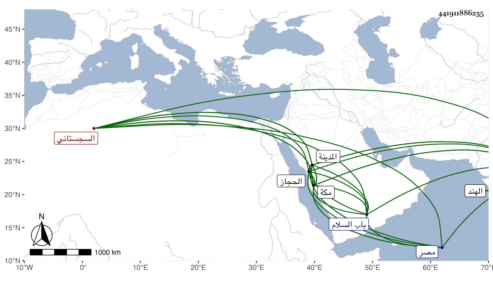

0902Sakhawi.DawLamic.ITO20230111-ara1.EIS1600.441911886235
Biography ID: 441911886235
992
أعظم شاه بن اسكندر شاه بن شمس الدين غياث الدين أبو المظفر السجستاني الأصل صاحب منجالة من بلاد الهند . كان حنفيا ذا حظ من العلم والخير محبا في الفقهاء والصالحين شجاعا كريما جوادا ابتنى بمكة عند باب أم هانئ مدرسة صرف عليها وعلى أوقافها اثني عشر ألف مثقال مصرية وقرر بها دروسا للمذاهب الأربعة وانتهت ودرس فيها في جمادى الآخرة سنة أربع عشرة . وكذا عمل بالمدينة النبوية مدرسة بمكان يقال له الحصن العتيق عند باب السلام ، هذا مع بعثه غير مرة لأهل الحرمين بصدقات طائلة . مات في سنة أربع عشرة أو التي تليها . ترجمه الفاسي في مكة مطولا وكذا المقريزي في عقوده وقد أخذ المدرسة المكية صاحب الحجاز ابن بركات وبناها لنفسه وكذا أخذ التي بالمدينة صاحب مصر .
